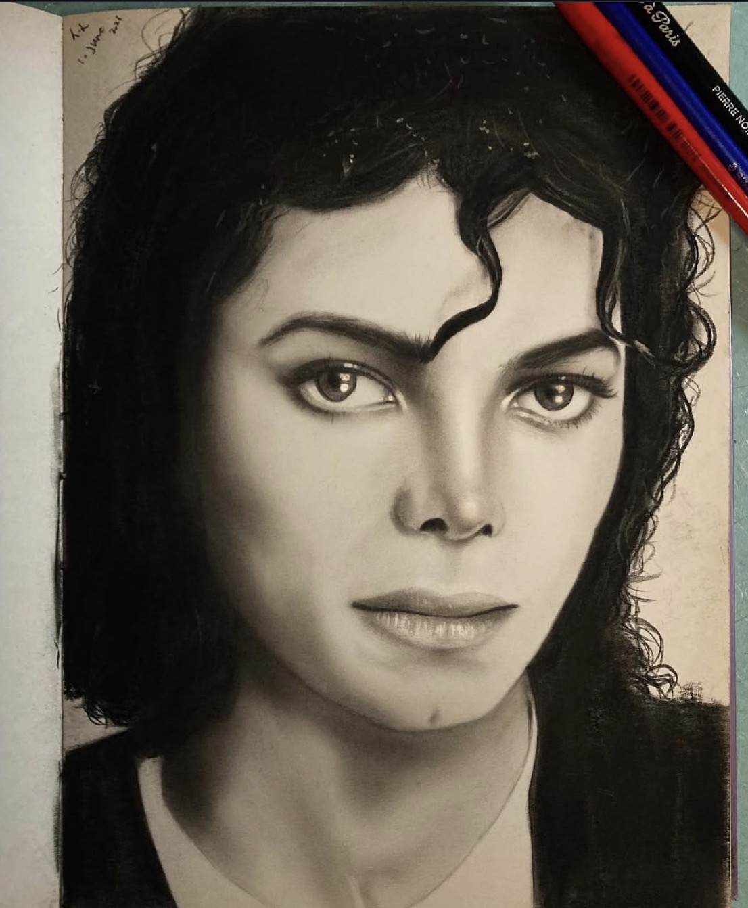

سلام، من سپیده سپهری هستم. اخترفیزیکدان، تحلیلگر داده و علاقهمند به اینکه شناخت و درک جهان برای همه قابلدسترس باشد. در پژوهشهایم از دادههای میدانهای فراکهکشانی تلسکوپ فضایی جیمز وب و روشهای یادگیری ماشین استفاده میکنم تا تاریخچهی ادغام کهکشانها در کیهانِ پرسرخگرایی را بررسی کنم و دادههای پیچیدهی کیهانی را به روایتهایی از تحول و تکامل کهکشانها تبدیل کنم.
درباره من
ایجاد پلی میان کیهان و کد. من از ابزارهای محاسباتی نوین و روشهای آماری برای پردازش و تحلیل حجم عظیمی از دادههای نجومی استفاده میکنم.
من دارای مدرک کارشناسی ارشد اخترفیزیک و کیهانشناسی از دانشگاه پادووا هستم. تمرکز اصلی پژوهش من بر تحول کهکشانهاست و در پایاننامهام حدود ۵۰۰٬۰۰۰ کهکشان از ASTRODEEP-JWST را برای اندازهگیری کسر جفتهای ادغامشونده تا انتقال به سرخ z~10 تحلیل کردم. برای انجام این کار، خطوط پردازش اختصاصی در Python توسعه دادم که Astropy، NumPy و SciPy را برای ادغام کاتالوگها و محاسبه عدمقطعیتهای آماری با یکدیگر ترکیب میکردند.
در حال حاضر، تمرکز من به سمت پژوهش مستقل درباره کاربردهای یادگیری ماشین در دادههای نجومی گسترش یافته است. من در حال بررسی مدلهای رگرسیون، طبقهبندی و خوشهبندی با استفاده از Scikit-learn هستم تا شناسایی ریختشناسی کهکشانها و ادغامهای کهکشانی را بهبود دهم.
تجربه
پژوهشگر مستقل
یادگیری ماشین
اوت ۲۰۲۵ — تاکنون
بررسی کاربردهای یادگیری ماشین در ریختشناسی کهکشانها و شناسایی ادغامها. پیادهسازی مدلهای رگرسیون، طبقهبندی و خوشهبندی با استفاده از ckdTree و Scikit-learn.
پژوهشگر (امواج گرانشی)
دانشگاه پادووا
مارس ۲۰۲۴ — ژوئیه ۲۰۲۴
بررسی تولید امواج گرانشی با استفاده از معادلات بولتزمن و ارزیابی قابلیت آشکارسازی سیگنالها با LISA و تلسکوپ اینشتین.
پژوهشگر (گذر سیارات فراخورشیدی)
دانشگاه پادووا
اکتبر ۲۰۲۳ — ژانویه ۲۰۲۴
مدلسازی منحنی نوری سیاره فراخورشیدی WASP-12b با استفاده از فوتومتری TESS و TASTE. استفاده از Python به همراه batman و emcee برای برآورد پارامترها با روش MCMC.
تیم ایستگاه زمینی
CubeSats (برنامه ESA)
فوریه ۲۰۲۳ — سپتامبر ۲۰۲۳
همکاری در عملیات ایستگاه زمینی برای یک CubeSat تحت حمایت ESA. کسب تجربه در زمینه نرمافزارهای کنترل، بودجه لینک و سامانههای VHF/UHF.
تحصیلات
کارشناسی ارشد اخترفیزیک و کیهانشناسی
دانشگاه پادووا، ایتالیا
اکتبر ۲۰۲۲ — ژوئیه ۲۰۲۵
پایاننامه: «نقش ادغام کهکشانها در جهان با انتقال به سرخ بالا با استفاده از میدانهای عمیق برونکهکشانی JWST». تحت نظارت پروفسور جولیا رودیکیرو.
کارشناسی فیزیک
دانشگاه صنعتی امیرکبیر، ایران
سپتامبر ۲۰۱۵ — سپتامبر ۲۰۲۰
کسب دانش پایه در فیزیک، ریاضیات و مبانی اولیه برنامهنویسی که زمینه لازم برای پژوهشهای پیشرفته در کیهانشناسی را فراهم کرد.
مهارتهای فنی
برنامهنویسی Python
تسلط پیشرفته بر استفاده از Astropy، NumPy، SciPy، Pandas، Matplotlib و astroML برای تحلیل جامع دادهها و خودکارسازی خطوط پردازش.
یادگیری ماشین
استفاده از مدلهای scikit-learn و KDTree برای رگرسیون، طبقهبندی و خوشهبندی در مجموعهدادههای پیچیده نجومی.
نرمافزارهای نجومی
تسلط بر استفاده از ابزارهای تخصصی مانند TOPCAT، SAOImage DS9، SpecPro و SExtractor.
تحلیل رصدی
تجربه در مدلسازی منحنی نوری (MCMC) و انجام فوتومتری و طیفسنجی عملی در رصدخانه آسیاغو.
تحلیلشده
تجربه پژوهشی
توسعهیافته
در دست انتشار
پروژههای منتخب
مجموعهای از پروژههای پژوهشی تحلیلی با تمرکز بر جهان اولیه، سامانههای سیارهای فراخورشیدی و کاربرد یادگیری ماشین در اخترشناسی رصدی.
گردشگری نجومی
چشمانداز من برای گردشگری نجومی، پیشینه من در اخترفیزیک را با تجربه عملیام در بخش پرنشاط مهماننوازی در رم ترکیب میکند. میزبانی از جوامع بینالمللی و برگزاری رویدادهای روزانه در یک هاستل پرجنبوجوش به من آموخت که گرد هم آوردن فرهنگهای گوناگون تا چه اندازه قدرتمند است — روحیهای از ارتباط و همبستگی که اکنون میخواهم آن را به آسمان شب منتقل کنم.
با تکیه بر طرح راهبردی جامع خود برای احیای زیرساختهای نجومی، هدف من تبدیل مکانهای تاریخی، مانند کاروانسراهای باستانی، به «هتل-رصدخانههای» مدرن است. با ترکیب کمپهای آسمان تاریک با تجربهای فراگیر از مهماننوازی، میتوانیم ترویج علم را به تجربهای فراموشنشدنی از سفر تبدیل کنیم و یک «اقتصاد نجومی» پایدار ایجاد کنیم.
فراتر از علم
زندگی من خارج از رصدخانه؛ از ساختن جامعه و سفر گرفته تا هنرهای تجسمی و داستانگویی دیجیتال.
جامعه و تجربیات
ارتباط با مردم در قلب کاری قرار دارد که انجام میدهم. با فعالیت در ایتالیا، از گرد هم آوردن گروههای متنوعی از مسافران و افراد محلی لذت میبرم. چه برگزاری شبهای پرنشاط آپریتیوو از دوشنبه تا جمعه باشد، چه هدایت شبهای سرگرمکننده کوییز در روزهای شنبه، یا سازماندهی پیادهرویهای اجتماعی و آرامشبخش، این تجربهها علاقه من به تبادل فرهنگی و ارتباط انسانی را تقویت میکنند.
هنرهای تجسمی
حدود ۵۰۰٬۰۰۰ کهکشان از ASTRODEEP-JWST را برای اندازهگیری کسر جفتهای ادغامشونده تا z~10 تحلیل کردم. برای ارزیابی شکلگیری ساختارهای محیطی در جهان اولیه، اصلاحات کامل بودن، عدمقطعیتهای آماری و ارزیابی خطاهای سیستماتیک را اعمال کردم.
- تحلیل داده
- خطوط پردازش Python
مدلسازی منحنی نوری سیاره فراخورشیدی WASP-12b با استفاده از فوتومتری TESS و TASTE و کتابخانههای batman و emcee برای برآورد پارامترها با روش MCMC انجام شد.
- فوتومتری
- برآورد MCMC
کاربرد مدلهای رگرسیون، طبقهبندی و خوشهبندی با استفاده از ckdTree و Scikit-learn برای شناسایی خودکار ریختشناسی کهکشانها و ادغامهای کهکشانی بررسی شد.
- یادگیری ماشین
- Scikit-learn

قابلیت آشکارسازی امواج گرانشیقابلیت آشکارسازی سیگنالهای امواج گرانشی جهان اولیه با استفاده از LISA و تلسکوپ اینشتین ارزیابی شد و یافتهها به تورم کیهانی و شکلگیری ساختارهای کیهانی مرتبط شدند.
- کیهانشناسی نظری
- تحلیل سیگنال
رسانه و یوتیوب
من عاشق ثبت و به اشتراک گذاشتن مسیر زندگیام هستم. ویدئوهایم را برای مستندسازی سفرها، بینشهای علمی و سبک زندگیام تدوین میکنم و هدفم خلق محتوایی جذاب است که داستانی را روایت کند.